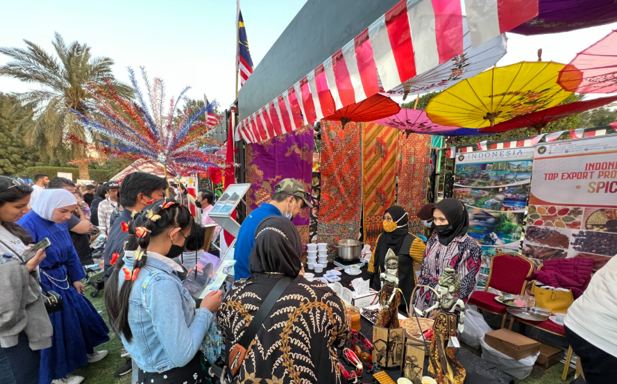
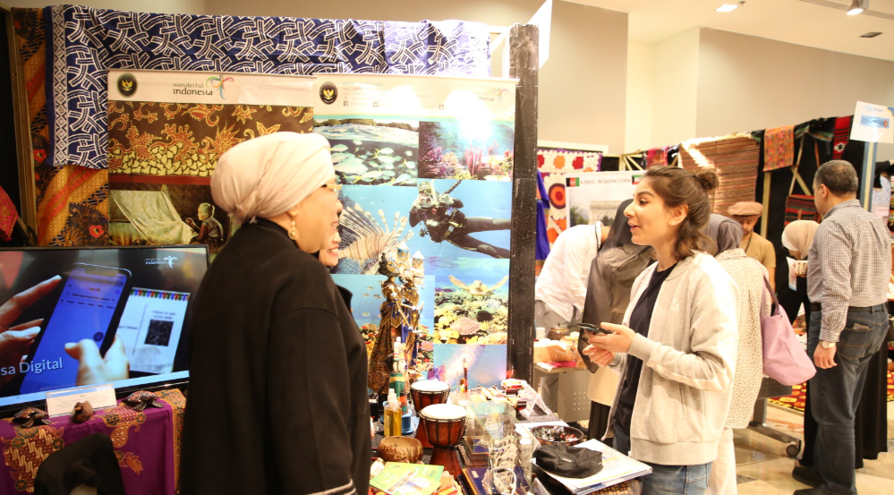
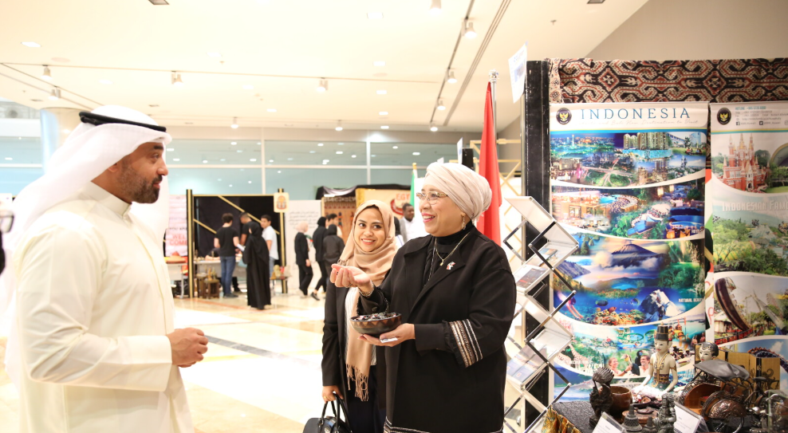
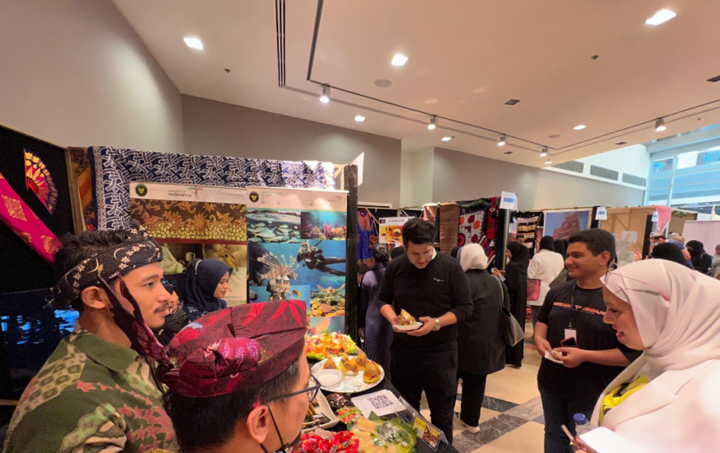

.png)
.png)
Hubungan diplomatik antara Indonesia dan Kuwait sudah secara resmi terbentuk sejak tahun 1968. Pada awalnya, hubungan bilateral ini dilaksanakan melalui KBRI Baghdad di Irak karena Indonesia belum memiliki kedutaan besar di Kuwait. Namun, sekarang sudah melalui KBRI Kuwait City yang resmi dibuka pada April 1976. Keduanya telah bekerja sama dengan baik sejak membuka hubungan diplomatik. Kerja sama antara keduanya terdapat dalam berbagai bidang.

PMI rumah tangga di Kuwait pastinya menghasilkan interaksi dengan masyarakat lokal sehingga dapat terjadi pertukaran budaya. Selain itu, promosi budaya juga dilakukan melalui pameran seperti menjual makanan khas dan produk lokal di booth dan penggunaan batik atau pakaian tradisional pada staf yang bekerja. Duta Besar RI secara khusus juga ikut mempromosikan makanan dan produk-produk Indonesia kepada masyarakat Kuwait melalui kunjungannya ke booth Indonesia di pameran pada tanggal 19 Maret 2022.
   Pada tahun 2019, sekitar 3.400 wisatawan Kuwait mengunjungi Indonesia karena Indonesia yang aktif dalam mempromosikan pariwisata ke Kuwait. Promosi ini salah satunya ada pada 10 moda transportasi umum/outdoor media Kuwait mengenai objek wisata di Indonesia.
.png)


Terdapat berbagai program beasiswa yang ditawarkan oleh universitas di Indonesia seperti Universitas Telkomsel, Universitas Sebelas Maret (UNS), dan UHAMKA serta program pendidikan lainnya. Menurut web kementrian luar negeri Kuwait City, terdapat sekitar 1.500 mahasiswa dari Kuwait yang belajar di Indonesia pada tahun 2020.
.png)

Sejumlah perawat profesional Indonesia bekerja dalam rumah sakit di Kuwait. Rumah sakit yang ada dalam kedua negara bekerja sama juga dalam penelitian dan pengembangan kesehatan. Menurut Abdullah Yateem Al Fadhli, pada saat masa pandemi Kuwait memberikan bantuan melalui pemberian obat-obatan ke Indonesia.